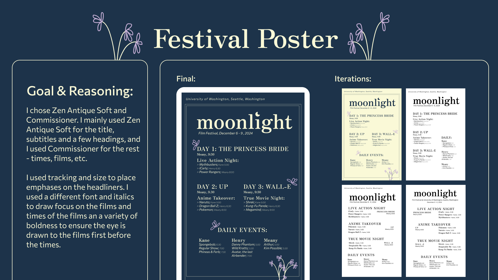
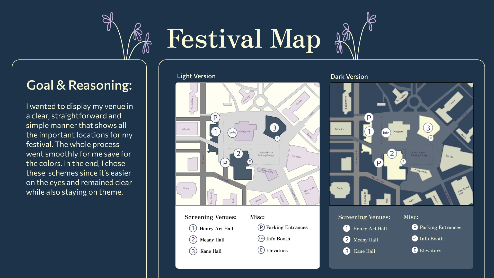
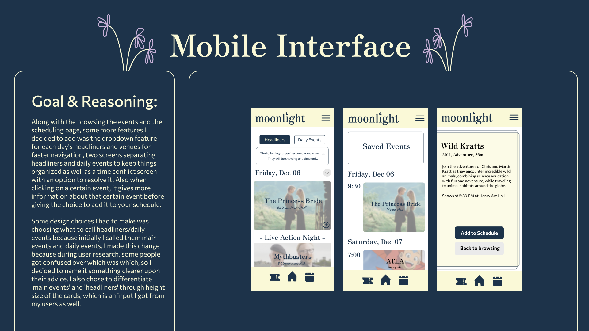

Moonlight
Summary: Built a consistent visual design and branding for a fictional film festival. Prototyped an affliating app on Figma.
This project was a product of a quarter-long class project. The focus is on visual design.
> Process Overview
-
Task
Create a theme, visual design, and prototype an app for a fictional film festival located in the UW.
-
Research
Gathered information on surrounding film festivals around the area. Created competitor analysis, personas and user journeys and decided on festival theme.
-
Visual Design
Created color scheme, chose typography, wordmark, & logomark created moodboards for the festival. Using the new identity, created a festival poster, signage and a map for the film festival.
-
Wireframes, User Testing, Prototyping
Created wireframes for a scheduling feature on the festival app. After gathering information via. user testing, changed some aspect of the design before protoyping.
> Results
  -
External Links
Shown above is a small sample of the case study. See the whole case study here. The final prototype can be found here .
-
Main Takeaways
I learned the core foundations of visual design with this project. Prior, I’ve never really looked at fonts and colors with such scrutiny. Moving forward, I will use my new skills to enhance the visuals of any design project.